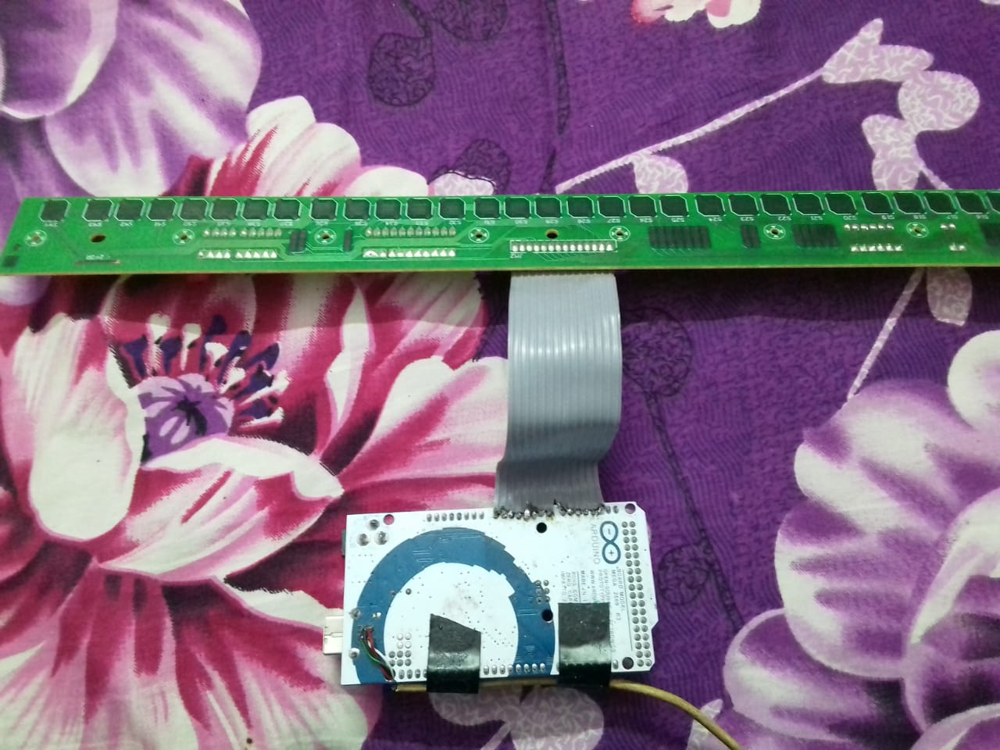

Description:
This tutorial explains how to use Arduino to convert a broken music keyboard into a midi controller for a PC.
This tutorial uses Casio SA-78A music keyboard with 44 keys. But you could use any musical keyboard.
This tutorial uses Casio SA-78A music keyboard with 44 keys. But you could use any musical keyboard.
Also all the softwares and tools used in this tutorial are completely free, some are even open sourced.
Materials needed:
-
Arduino Mega 2650 [link]
(Any Arduino board can be used)

-
Casio SA-78A Musical Keyboard [link]
(any Music keyboard can be used)

- Arduino MIDI Library (Available at Arduino's Library Manager) [link]
- Hairless: midi to serial bridge [link]
- Virtual Midi driver. (Depends upon the Operating System.)
(LoopBe1, Midi Yoke, Copper Lan, Microsoft GS Wavelength are some of the available contestants)
For me Microsoft's GS Wavelength and Copper Lan worked pretty well.
A brief background on what motivated me for this project:
My father bought Casio SA-78A to learn playing keyboard.
After few months of using, it stopped working.
It turned out that the power adapter was faulty and caused a voltage surge which damaged the onboard sound processor.
With no repair options. I decided to convert it into a midi controller for PC to be used with DAW (Digital Audio Workstation: like Fruity Loops Studio).
While I was working on this project. I faced several difficulties and many setbacks. Most of my effort went in researching the efficient methods that could be employed to make this project a success, including programming the Arduino.
I decided to make this tutorial, to make it easier for people who are doing a similar project.
With no repair options. I decided to convert it into a midi controller for PC to be used with DAW (Digital Audio Workstation: like Fruity Loops Studio).
While I was working on this project. I faced several difficulties and many setbacks. Most of my effort went in researching the efficient methods that could be employed to make this project a success, including programming the Arduino.
I decided to make this tutorial, to make it easier for people who are doing a similar project.
Understanding the keyboard circuitry:
The keyboard can be disassembled by unscrewing all the screws from the bottom.
After removing the top case, you will be greeted with three circuit boards.
The keyboard has 44 keys. But only 14 wires are connecting the key circuit board with the main board.
It turns out that the 44 keys are divided into 6 segments each with 8 keys, totalling 6 x 8 = 48 keys. To make it 44 keys the last segment (segment 6) has only 4 keys.
Just for convenience, lets represent the segments as SEG and each of the 8 keys in a segment as BTN (button).
i.e SEG wires/pins goes from SEG1 to SEG6. Whereas BTN wires/pins goes from BTN1 to BTN8.
Every pair of SEG and a BTN is mapped to a unique key on the keyboard.
For example (SEG2,BTN8) might be mapped to a key with Note C# on the keyboard.
We need to connect these 14 pins from the key circuit board to analog or digital pins of the Arduino.
To keep the connection permanent and reliable, I had the ribbon cable from the key circuit board been soldered onto the Arduino's analog pins (A0 to A13).
After removing the top case, you will be greeted with three circuit boards.
- A power supply board
- A main board with sound processor, display and control buttons
- A key circuit board
We are only interested in the key circuit board.
The keyboard has 44 keys. But only 14 wires are connecting the key circuit board with the main board.
It turns out that the 44 keys are divided into 6 segments each with 8 keys, totalling 6 x 8 = 48 keys. To make it 44 keys the last segment (segment 6) has only 4 keys.
Just for convenience, lets represent the segments as SEG and each of the 8 keys in a segment as BTN (button).
i.e SEG wires/pins goes from SEG1 to SEG6. Whereas BTN wires/pins goes from BTN1 to BTN8.
The key-controller sequentially connects VCC at every SEG wire and then probe each 8 of the BTN wires to check whether if the circuit is closed.
Continuity from a SEG wire to a BTN wire represents that the probed BTN of that particular SEG has been pressed.
i.e The switch corresponding to that particular key is closed.
i.e The switch corresponding to that particular key is closed.
Every pair of SEG and a BTN is mapped to a unique key on the keyboard.
For example (SEG2,BTN8) might be mapped to a key with Note C# on the keyboard.
We need to connect these 14 pins from the key circuit board to analog or digital pins of the Arduino.
To keep the connection permanent and reliable, I had the ribbon cable from the key circuit board been soldered onto the Arduino's analog pins (A0 to A13).

SEG1 SEG2 SEG3 SEG4 SEG5 SEG6 BTN1 BTN2 BTN3 BTN4 BTN5 BTN6 BTN7 BTN8
| | | | | | | | | | | | | |
| | | | | | | | | | | | | |
| | | | | | | | | | | | | |
A0 A1 A2 A3 A4 A5 A6 A7 A8 A9 A10 A11 A12 A13
Understanding the logic:
We need the Arduino to sequentially apply potential at the SEG pins and then for each SEG check the continuity at each BTN pins.
Presence of a continuity represents that the certain key of that segment has been pressed.
On the board these keys are labeled as switches ranging from
Here is a table showing the mapping between these switches (keys) and the pair of SEG and BTN.
On the board these keys are labeled as switches ranging from
S1 to S44
(for 44 keys).
Here is a table showing the mapping between these switches (keys) and the pair of SEG and BTN.
|| SEG1| SEG2| SEG3| SEG4| SEG5| SEG6
=====||=======|=====|=====|=====|=====|=====
BTN1 || S1 | S9 | S17 | S25 | S33 | S41
-----||-------|---- |-----|-----|-----|----
BTN2 || S2 | S10 | S18 | S26 | S34 | S42
-----||-------|-----|-----|-----|-----|----
BTN3 || S3 | S11 | S19 | S27 | S35 | S43
-----||-------|-----|-----|-----|-----|----
BTN4 || S4 | S12 | S20 | S28 | S36 | S44
-----||-------|-----|-----|-----|-----|----
BTN5 || S5 | S13 | S21 | S29 | S37 | NIL
-----||-------|-----|-----|-----|-----|----
BTN6 || S6 | S14 | S22 | S30 | S38 | NIL
-----||-------|-----|-----|-----|-----|----
BTN7 || S7 | S15 | S23 | S31 | S39 | NIL
-----||-------|-----|-----|-----|-----|----
BTN8 || S8 | S16 | S24 | S32 | S40 | NIL
For this to happen, we must set the pinMode of SEG pins as OUTPUT, because Arduino is writing out a Signal on them. Whereas set the pinMode of BTN pins as INPUT, because Arduino is reading Signal from them.
After detecting the key-press the Arduino sends out the Note of that key on its serial port. This is done through the Arduino's MIDI Library, which is available at the Adrduino's Library Manager.
This key Note sent from the Arduino on its serial port is detected on the PC by a program called "Hairless MIDI to serial bridge". This program reads the signals from the serial port on the PC and converts them into MIDI inputs.
This MIDI inputs is detected by the Virtual MIDI driver on the PC which delivers it to the Program which expexcts a MIDI input (like any DAW program).
Programming the Arduino:
Before moving to programming stuffs. We must first install some dependencies on the PC.
All these dependencies are completely free.
We need the Arduino to apply VCC at each SEG pins and then scan every BTN pins to check if any key has been pressed. If the key is pressed then send the Note to the Serial port.
Here is the complete program for the Arduino.
All these dependencies are completely free.
- Install Arduino's MIDI Library (Available at Arduino's Library Manager)[link]
- Hairless: midi to serial bridge [link]
-
Install a Virtual Midi driver for your OS
Any one from this list of drivers might work.- loopbe1 [link]
- midi yoke [link]
- virtualmidi from tobias-erichsen [link]
- copper lan [link]
- Microsoft's GS Wavelength Synth (this already comes installed on Windows)
We need the Arduino to apply VCC at each SEG pins and then scan every BTN pins to check if any key has been pressed. If the key is pressed then send the Note to the Serial port.
Here is the complete program for the Arduino.
#include<MIDI.h>
MIDI_CREATE_DEFAULT_INSTANCE();
int HIGHX = 255;
int LOWX = 0;
const int DATA_PIN_COUNT = 8;
const int SEGMENT_PIN_COUNT = 6;
int pinList[] = {A0,A1,A2,A3,A4,A5};
int NOTELOOKUP[6][8] = {
93,94,95,96,0,0,0,0,
85,86,87,88,89,90,91,92,
77,78,79,80,81,82,83,84,
69,70,71,72,73,74,75,76,
61,62,63,64,65,66,67,68,
53,54,55,56,57,58,59,60
};
int NOTE_ON_OFF[6][8] = {
0,0,0,0,0,0,0,0,
0,0,0,0,0,0,0,0,
0,0,0,0,0,0,0,0,
0,0,0,0,0,0,0,0,
0,0,0,0,0,0,0,0,
0,0,0,0,0,0,0,0,
};
int k;
void setup()
{
// Listen to all incoming messages
MIDI.begin(MIDI_CHANNEL_OMNI);
Serial.begin(256000);
//definig pins
pinMode(A13,INPUT);
pinMode(A12,INPUT);
pinMode(A11,INPUT);
pinMode(A10,INPUT);
pinMode(A9,INPUT);
pinMode(A8,INPUT);
pinMode(A7,INPUT);
pinMode(A6,INPUT);
pinMode(A13,INPUT_PULLUP);
pinMode(A12,INPUT_PULLUP);
pinMode(A11,INPUT_PULLUP);
pinMode(A10,INPUT_PULLUP);
pinMode(A9,INPUT_PULLUP);
pinMode(A8,INPUT_PULLUP);
pinMode(A7,INPUT_PULLUP);
pinMode(A6,INPUT_PULLUP);
pinMode(A5,OUTPUT);
pinMode(A4,OUTPUT);
pinMode(A3,OUTPUT);
pinMode(A2,OUTPUT);
pinMode(A1,OUTPUT);
pinMode(A0,OUTPUT);
analogWrite(A5,HIGHX);
analogWrite(A4,HIGHX);
analogWrite(A3,HIGHX);
analogWrite(A2,HIGHX);
analogWrite(A1,HIGHX);
analogWrite(A0,HIGHX);
k=0;
}
void loop() {
k = k + 1;
if(k>=6){
k = 0;
}
//Segment k
analogWrite(pinList[k],LOWX);
//--------------------------------------------
//BTN1
if(analogRead(13)<900){
if(NOTE_ON_OFF[k][0] != 1){
MIDI.sendNoteOn(NOTELOOKUP[k][0], 127, 1);
NOTE_ON_OFF[k][0] = 1;
}
}
else{
if(NOTE_ON_OFF[k][0] != 0){
MIDI.sendNoteOff(NOTELOOKUP[k][0], 0, 1);
NOTE_ON_OFF[k][0] = 0;
}
}
//--------------------------------------------
//BTN2
if(analogRead(12)<900){
if(NOTE_ON_OFF[k][1] != 1){
MIDI.sendNoteOn(NOTELOOKUP[k][1], 127, 1);
NOTE_ON_OFF[k][1] = 1;
}
}
else{
if(NOTE_ON_OFF[k][1] != 0){
MIDI.sendNoteOff(NOTELOOKUP[k][1], 0, 1);
NOTE_ON_OFF[k][1] = 0;
}
}
//--------------------------------------------
//BTN3
if(analogRead(11)<900){
if(NOTE_ON_OFF[k][2] != 1){
MIDI.sendNoteOn(NOTELOOKUP[k][2], 127, 1);
NOTE_ON_OFF[k][2] = 1;
}
}
else{
if(NOTE_ON_OFF[k][2] != 0){
MIDI.sendNoteOff(NOTELOOKUP[k][2], 0, 1);
NOTE_ON_OFF[k][2] = 0;
}
}
//--------------------------------------------
//BTN4
if(analogRead(10)<900){
if(NOTE_ON_OFF[k][3] != 1){
MIDI.sendNoteOn(NOTELOOKUP[k][3], 127, 1);
NOTE_ON_OFF[k][3] = 1;
}
}
else{
if(NOTE_ON_OFF[k][3] != 0){
MIDI.sendNoteOff(NOTELOOKUP[k][3], 0, 1);
NOTE_ON_OFF[k][3] = 0;
}
}
//--------------------------------------------
//BTN5
if(analogRead(9)<900){
if(NOTE_ON_OFF[k][4] != 1){
MIDI.sendNoteOn(NOTELOOKUP[k][4], 127, 1);
NOTE_ON_OFF[k][4] = 1;
}
}
else{
if(NOTE_ON_OFF[k][4] != 0){
MIDI.sendNoteOff(NOTELOOKUP[k][4], 0, 1);
NOTE_ON_OFF[k][4] = 0;
}
}
//--------------------------------------------
//BTN6
if(analogRead(8)<900){
if(NOTE_ON_OFF[k][5] != 1){
MIDI.sendNoteOn(NOTELOOKUP[k][5], 127, 1);
NOTE_ON_OFF[k][5] = 1;
}
}
else{
if(NOTE_ON_OFF[k][5] != 0){
MIDI.sendNoteOff(NOTELOOKUP[k][5], 0, 1);
NOTE_ON_OFF[k][5] = 0;
}
}
//--------------------------------------------
//BTN7
if(analogRead(7)<900){
if(NOTE_ON_OFF[k][6] != 1){
MIDI.sendNoteOn(NOTELOOKUP[k][6], 127, 1);
NOTE_ON_OFF[k][6] = 1;
}
}
else{
if(NOTE_ON_OFF[k][6] != 0){
MIDI.sendNoteOff(NOTELOOKUP[k][6], 0, 1);
NOTE_ON_OFF[k][6] = 0;
}
}
//--------------------------------------------
//BTN8
if(analogRead(6)<900){
if(NOTE_ON_OFF[k][7] != 1){
MIDI.sendNoteOn(NOTELOOKUP[k][7], 127, 1);
NOTE_ON_OFF[k][7] = 1;
}
}
else{
if(NOTE_ON_OFF[k][7] != 0){
MIDI.sendNoteOff(NOTELOOKUP[k][7], 0, 1);
NOTE_ON_OFF[k][7] = 0;
}
}
//--------------------------------------------
analogWrite(pinList[k],HIGHX);
MIDI.read();
}
Understanding the Arduino program:
Reading from pins on Arduino which are not connected to any input source would cause the Arduino to read garbage values.
To prevent reading garbage values from these pins, they must be connected to a pullup or pulldown registers. by using these registers we can read expected value from the pins when they are not connected to anything, instead of reading garbage.
Arduino Mega 2560 have pullup registers for all the pins already built in the board. If you wish, you could connect your own pullup/pulldown registers.
But here we are using the built in pullup registers on the board.
Include the
And add the macro
First we define some data structures that the program will use.
In the
The function
We set the mode of pins A6 to A13 as input. These will read the values of BTN1 to BTN8 wires.
Similarly we set the mode of pins from A0 to A5 as output. These will write the values to SEG1 to SEG6 wires.
We then enable the pullup registers for the pins A6 to A13, from which we will be reading BTN values. We write HIGH value of 255 to all the output pins A0-A5 (we are writing HIGH value because we are using pullup registers.)
And then we initialize a counter variable, k which will count from 0 to 5 in loop for the SEG pins.
In the
Next we write on output analog pin A(n) (0<=n<=5), the LOW value of 0. At this point all the other output analog pins are HIGH. These output analog pins are connected to SEG wires.
Now we must scan all the BTN wires, i.e all the input analog pins fron A6 to A13. If the circuit from SEG(n) to BTN(k) is complete then the switch/key is closed. A closed key will result in reading of lower value of the input analog pin connected to that BTN wire.
By Observation, the value of the analog pin connected to that BTN wire on key press is always lesser that
If a button press is detected then send the MIDI note corresponding to that pair of (SEG,BTN) to the serial port using
We used a flag to avoid continuous sending of a
Similarly we used a flag to avoid continuous sending of
On each
The
Also using the max baud rate of
To prevent reading garbage values from these pins, they must be connected to a pullup or pulldown registers. by using these registers we can read expected value from the pins when they are not connected to anything, instead of reading garbage.
Arduino Mega 2560 have pullup registers for all the pins already built in the board. If you wish, you could connect your own pullup/pulldown registers.
But here we are using the built in pullup registers on the board.
Include the
MIDI.h
library that we have downloaded from the Arduino's Library Manager.
And add the macro
MIDI_CREATE_DEFAULT_INSTANCE()
.
First we define some data structures that the program will use.
pinList
array store the analog pin from A0 to A5. Thesea are connected to the SEG wires on which value is to be written.
NOTELOOKUP
is a lookup table storing the mapping between the (SEG,BTN) pair and the key's Note.
NOTE_ON_OFF
is table which stores the current state of the keypress.
At any instance a key is either pressed (ON) or not (OFF).
In the
setup()
funtion, we call the MIDI.begin(MIDI_CHANNEL_OMNI)
function.
The function
Serial.begin(256000)
sets the serial transmission at 256000 baud rate.
We set the mode of pins A6 to A13 as input. These will read the values of BTN1 to BTN8 wires.
Similarly we set the mode of pins from A0 to A5 as output. These will write the values to SEG1 to SEG6 wires.
We then enable the pullup registers for the pins A6 to A13, from which we will be reading BTN values. We write HIGH value of 255 to all the output pins A0-A5 (we are writing HIGH value because we are using pullup registers.)
And then we initialize a counter variable, k which will count from 0 to 5 in loop for the SEG pins.
In the
loop()
function we define a counter variable k
to count from 0 to 5 and repeat.
This counter variable acts as index to pinList
array
which provides the current output analog pin number.
Next we write on output analog pin A(n) (0<=n<=5), the LOW value of 0. At this point all the other output analog pins are HIGH. These output analog pins are connected to SEG wires.
Now we must scan all the BTN wires, i.e all the input analog pins fron A6 to A13. If the circuit from SEG(n) to BTN(k) is complete then the switch/key is closed. A closed key will result in reading of lower value of the input analog pin connected to that BTN wire.
By Observation, the value of the analog pin connected to that BTN wire on key press is always lesser that
900
. In fact it is close to 200-300
range.
This why we compare all the 8 input readings with 900
.
If a button press is detected then send the MIDI note corresponding to that pair of (SEG,BTN) to the serial port using
MIDI.sendNote()
function.
We used a flag to avoid continuous sending of a
NoteON
signal on key press. The sent Note remains ON as long as the key is pressed.
Similarly we used a flag to avoid continuous sending of
NoteOFF
signal on key press.
This signal is sent only once when the key is released from being pressed and turns the Note OFF
.
On each
loop()
we scan all the 8 buttons of the next segment to detect a key press and send the note immediately.
The
loop()
frequency is pretty good and each loop executes in constant time.
Also using the max baud rate of
256000
makes the serial transmission very fast.
Configuring and Setting up the PC:
- Upload this program on Arduino.
- Open "Hairless midi to serial bridge" program on your PC.
- From the menu of Hairless go to preferences and set the baud rate to match that of the Arduino's serial-transmission rate (256000 for this tutorial).
- Select the input port on which the Arduino is connected. Then on the output select the virtual midi driver that you installed.
- Open up the DAW application
- Configure the midi input settings in the DAW application by selecting the virtual midi driver that you have installed. You might also need to select the correct port. Look up the instructions and FAQ of the DAW program that you are using to get the settings correct.
- For a quick test:
Open up Hairless and press a key. On the Hairless UI interface, the input green light must blink.
If the midi driver is recieving the signal from the hairless, then the output green light should blink as well.
Testing:
I will leave the re-assembly of the keyboard upto you.
You could use some double sided tapes to fix the Arduino inside the keyboard's case.
Now comes testing.
You could use some double sided tapes to fix the Arduino inside the keyboard's case.
Now comes testing.